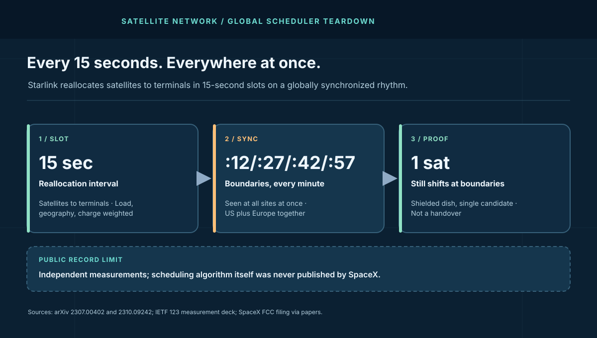
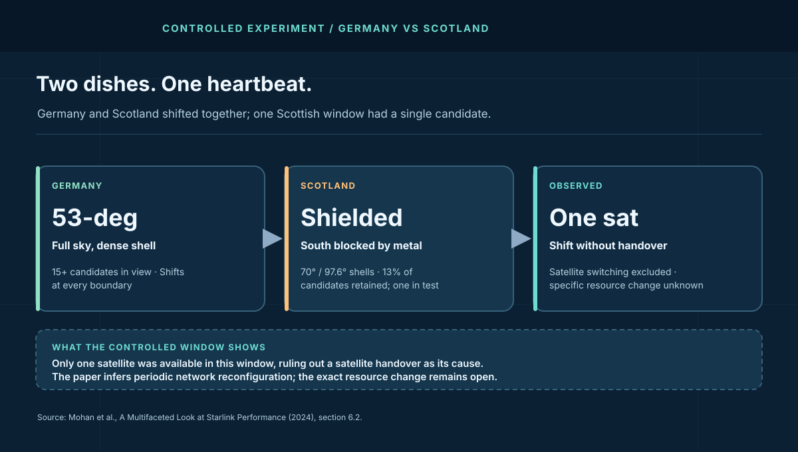

1. The Discovery: Germany, Scotland, and a Sheet of Metal
The cleanest experiment in low-orbit networking needed two dishes and a sheet of metal. The Munich–Edinburgh team (Mohan, Ferguson, Cech and colleagues) ran controlled Starlink terminals in Germany, under the dense 53-degree shell with more than 15 candidate satellites overhead, and in Scotland, where they shielded the dish from the south with metal so it could see only the sparse 70 and 97.6-degree orbits — one or two candidates at a time, tracked precisely through TLE data and CelesTrak. Then they measured fine-grained latency with IRTT from both.
Both dishes shifted at the same marks: throughput and round-trip time changing at 15-second boundaries, globally synchronized, stable inside each slot. The Scotland result kills the obvious theory. With a single satellite in view there is nothing to hand over to — yet the shifts persist, the connection even dropping at boundaries. Independently, the Iowa–Cornell team (Tanveer, Singh and colleagues) confirmed what changes at those marks: Starlink's own app once identified the connected satellite and no longer does, so they pulled obstruction maps over gRPC every 15 seconds and XOR-ed consecutive slots to watch the assignment change. The handover hypothesis fails its own experiment. What remains is a global load balancer wearing a handover's clothing.
| Setup (reported) | Germany dish | Scotland dish |
|---|---|---|
| Visible sky | Full; 15+ candidates (53-degree shell) | South shielded; 1–2 candidates (70 / 97.6-degree) |
| Tracking | Full field of view | TLE plus CelesTrak per-slot verification |
| Observed at boundaries | RTT plus throughput shifts | RTT plus throughput shifts, plus drops |
| Handover possible? | Yes | No — single candidate |
The Iowa–Cornell team, measuring from four terminals across the US and Europe, pinned the boundaries to the clock: latency characteristics change at the 12th, 27th, 42nd, and 57th second of every minute, simultaneously at every vantage point, with consecutive windows statistically distinct (Mann-Whitney U, p below .05). Four sites, two continents, one metronome. Coincidence does not keep that kind of time.
2. The Architecture: Two Controllers, One Rhythm
The measurement papers converge on a two-tier design familiar from terrestrial WAN traffic engineering. First, a global controller allocates satellites to terminals every 15 seconds, weighing load, geospatial conditions, and even satellite charge state; a SpaceX FCC filing describing such a scheduler predates the measurements, and the observed periodicity matches it. Measured, its politics become arithmetic: with 35–44 satellites visible per slot on average, the scheduler picks the high ones (median elevation 22.9° above the satellites it passes over), tilts its picks north of the dish, prefers newer launch batches, and chooses sunlit satellites 72.3% of the time when a sunlit option exists — a policy that reads as energy and hardware-longevity budgeting, not geography alone. Second, an on-satellite controller schedules the flows of its assigned terminals — visible as parallel latency bands a few milliseconds apart inside each slot, the signature of round-robin medium-access control, also consistent with the FCC filing.
The slot has geometry. IETF measurement decks report terminals assigned in 15-second slots with phased-array tracking across 11 degrees of arc per slot, each spacecraft splitting 2,000 MHz of downlink into eight 250 MHz channels across dozens of spot beams. Within a slot, latency drifts gently with the satellite's track; at the boundary, the allocation can change wholesale. Stable inside, step at the edge — that is a scheduler's waveform, not a handover's.
Note the resonance nobody at SpaceX has claimed: the latency whitepaper's instrument samples millions of routers every 15 seconds — the same cadence as the allocation slot. Treat that as coincidence of engineering convenience until proven otherwise, but measure in 15-second bins regardless. Binning anywhere else smears the boundaries and hides the mechanism, which is why coarse monitoring never sees the heartbeat at all.
3. The Mechanism: Why It Cannot Be Handover
Take the constraints as a proof. Handover requires an alternative: a dish must move from one satellite to another. The shielded Scottish dish, verified by orbital tracking to hold a single candidate through entire intervals, shifts and drops at boundaries anyway. A cause requiring two satellites cannot explain an effect observed with one. The allocation papers add the positive case: gRPC obstruction-map XORs show assignments changing slot to slot, and a trained scheduler model over azimuth, elevation, age, and sunlit status reproduces 65% of allocations within its top five guesses — three times the 22% baseline. Load, geometry, and power state decide; motion merely provides the candidates. The newest evidence is metrological: an Aalborg University team probing at 500 Hz across multi-month traces found the rhythm's phase alignment stable over months and concluded the clocking is pre-planned, not emergent — and measured the boundary damage directly, with spikes averaging about 74ms above the interior mean, concentrated in roughly the first 140ms and the last 75ms of each slot.
State the monitoring inequality plainly. Let H be boundary shifts explainable by handover and L be shifts under single-candidate conditions. The measurements show L > 0 at every boundary, so handover explains at most a fraction of the rhythm — and the globally synchronized timing across different satellites, gateways, and PoPs pushes that fraction toward decoration. Design your alerts for L, the load-balancing term, because it fires four times a minute whether or not any handover occurs.
What the algorithm optimizes stays undisclosed — SpaceX never published it, and the papers model its outputs, not its weights. The honest sentence: a global scheduler reallocates every 15 seconds on fixed minute boundaries; everything about its objective function is inference. Papers that claim more than the XOR maps and the statistics prove should be read as modeling, including the preference weights.
4. Second-Order Effects: What the Heartbeat Bills Realtime Apps
The scheduler's tax falls heaviest on applications that assume a stable path. IETF decks show Zoom uplink traffic stepping at 15-second marks and cloud gaming surviving at 60 fps only where the tail stays inside the frame budget — fine on average, fragile at boundaries. A 2024 ACM paper (StarTCP) goes further, building a handover-aware transport precisely because fixed-interval bursty losses impair TCP: loss-based congestion control reads a scheduling drop as congestion and throttles a path that recovers within the slot. The control loop fights the scheduler four times a minute and loses every round.
That is why the transport guidance in the latency teardown matters doubly here: BBR-class model-based control survives scheduled loss that CUBIC treats as verdict, and the gap between them is measurable as goodput during boundary seconds. Run the two side by side across several boundaries; the difference is the scheduler tax your application currently pays, itemized.
For anyone sizing realtime service over Starlink — gaming, trading, teleoperation, and the frontline drone links from the outage teardown — the design number is not the median but the boundary step: how far latency and throughput move at the marks, and whether the application's deadlines survive that step four times a minute. Size for the boundary, not the slot. Test recovery with the backlog drain calculator: each reallocation is a micro-burst the queue must absorb before the next mark arrives.

5. Field Glossary: Eight Terms This Rhythm Teaches
Scheduler writing punishes the word "handover" first. Eight terms, each tied to what the papers measured:
| Term | What it means here | Why it mattered |
|---|---|---|
| Slot | The 15-second allocation window. | Everything stable inside, everything allowed to change at the edge. |
| Boundary (:12/:27/:42/:57) | Fixed minute marks where reallocations land. | Observed simultaneously on two continents; the metronome itself. |
| Handover | Moving a terminal between satellites. | The disproved theory — present sometimes, explanatory rarely. |
| Load balancing | Reassigning for load, geometry, charge state. | The surviving explanation for single-candidate shifts. |
| TLE / CelesTrak | Public orbital element sets plus tracker. | How researchers verified exactly which satellites were visible per slot. |
| On-satellite MAC | Round-robin flow scheduling aboard the spacecraft. | Explains the parallel few-ms latency bands inside each slot. |
| gRPC obstruction maps | Terminal sky maps pulled programmatically per slot. | XOR-ing consecutive maps reveals the allocation change directly. |
| Synchronized interval | All sites stepping on the same clock. | Proof the scheduler is global, not per-region or per-satellite. |
Global coordination and slot discipline are taught in the distributed systems course; tail-latency measurement under periodic schedulers lives in the cloud networking course.
6. What to Steal: Designing Inside Someone Else's Slot
- Bin all measurements at 15 seconds. Coarser bins smear boundaries into noise; finer bins drown in jitter. The scheduler's own cadence is the correct sampling grid — SpaceX's instrument already uses it.
- Split alerts into boundary vs off-boundary. Boundary-clustered alerts are the scheduler's normal operation and deserve thresholds, not pages. Off-boundary alerts keep the handover and outage runbooks. One alert stream for both is how teams learn to ignore both.
- Run loss-tolerant transport by default. BBR-class control over scheduled, non-congestive loss; CUBIC only where you have proven the loss is congestion. Re-verify per path — the scheduler's tax varies by shell and load.
- Budget the boundary step, not the median. Size realtime deadlines for the worst observed boundary shift (latency plus throughput dip), occurring four times a minute. If the deadline cannot survive the step, no median will save it.
- Test at the marks on purpose. Schedule load tests and failover drills to cross :12/:27/:42/:57 deliberately, and measure recovery before the next mark. A system that heals within one slot never notices the scheduler at all.
7. The Cost Model: Pricing the Boundary Step
No private telemetry, no invented invoice. Model exposure as: boundary steps per hour × affected sessions × value per degraded session-second + monitoring toil. Four boundaries a minute means 240 scheduler events per hour on every terminal — a slot whose opening spikes run about 74ms above the interior mean, packed into the first ~140ms and final ~75ms that the Aalborg team measured, spends about a fifth of every boundary second in the damage zone. Take a labeled scenario — 10,000 concurrent realtime sessions, 5% visibly degraded for roughly a minute per boundary at a modeled $0.01 per degraded session-minute — and the scheduler tax is 500 × 240 × $0.01 = $1,200 per peak hour before any outage occurs. Change the degradation share and the total scales linearly; that is the point. Run your own SLO burn through the error budget calculator. The ratio between median performance and boundary performance is the lesson, not any plug number.
| Scenario (labeled model) | Boundary math | Modeled exposure |
|---|---|---|
| 10k realtime sessions, 5% degraded ~1 min per boundary | 240 marks/hr × 500 sessions | $1,200/hr scheduler tax (500 × 240 × $0.01) |
| 1k trading terminals, 1% missing a deadline per boundary | 240 marks/hr × 10 terminals | 2,400 missed deadlines/hr before outages |
| 100 teleop links, boundary step inside control loop | 240 marks/hr × 100 links | 24,000 control transients/hr to absorb |
| Monitoring toil, any scenario | Boundary alerts untriaged | Alert fatigue priced in pager-hours |
Appendix A. Worked Example: Slot Arithmetic for One Region
Labeled scenario model throughout — SpaceX published no capacity figures. Take a mid-latitude region under the dense shell: on the order of 40 visible satellites per terminal (the constellation paper measured 35–44 per slot), 15-second slots, each spacecraft serving its assigned terminals across 8 channels and 48 downlink beams. In one hour the global scheduler makes 240 allocation passes over the region; with 100,000 active terminals, each pass re-examines all of them against load, geometry, and charge state:
| Quantity (modeled) | Value | Reading |
|---|---|---|
| Allocation passes per hour | 240 | 3,600 ÷ 15 — the metronome never pauses |
| Terminal re-examinations per hour | 24M (100k × 240) | Every terminal reconsidered every slot |
| Boundary seconds per hour | ~240 (one per mark) | 6.7% of wall-clock sits at a step edge |
| Proven design: heal inside one slot | Recovery < 15s | Systems healing faster than the rhythm never feel it |
The third row is the one most capacity plans miss: nearly 7% of every hour is a boundary neighborhood where latency and throughput are allowed to step. Applications with second-scale deadlines spend a material share of their lives at the edge of a slot. Size the retry budgets for the boundary rate (240/hr), not the median second. Recompute with your own terminal counts; the method travels, the plug numbers do not.
Appendix B. Reference Posture: Monitoring a Scheduled Sky
The dashboard contract I would require before calling any low Earth orbit (LEO)-dependent monitoring honest:
- A slot grid on every graph. Vertical marks at :12/:27/:42/:57 on all latency, loss, and throughput charts. Steps landing on marks are scheduler output; steps landing elsewhere are incidents.
- Two alert lanes. Boundary-lane thresholds tuned to observed step size; off-boundary lane wired to paging. A single threshold for both guarantees either noise or blindness.
- Per-slot goodput, not throughput. Retransmissions flatter interface counters at boundaries. Measure useful bytes per slot or fly blind exactly when it matters.
- Transport labeled per path. CUBIC vs BBR recorded alongside every measurement series. Unlabeled transport comparisons across papers — and vendors — are meaningless on scheduled loss.
- A quarterly re-baseline. Scheduler behavior, shell density, and load all drift. Re-run the boundary characterization from Appendix D every quarter and update thresholds in writing.
- A handover-misdiagnosis counter. Count incidents first labeled handover that proved to be rebalancing. A falling count means the team is learning; a flat one means the runbook is not.
Pair this posture with the cloud networking course and re-run it whenever the constellation shell or your terminal mix changes. Schedulers do not announce their updates; only measurement notices.
Appendix C. Deep Dive: Transport on a Metronome — CUBIC, BBR, and StarTCP
IETF measurement decks report the transport facts the whitepaper omits — attributed throughout. Loss-based control (CUBIC, including QUIC running CUBIC) treats each scheduling drop as congestion and backs off; model-based control (BBR) holds its rate model through non-congestive loss and rides out the slot. The decks show the two behaving identically badly under CUBIC-family control and materially better under BBR, with ACK pacing adding a second wound: TCP tunes its sending rate over several RTTs while the RTT distribution itself reshapes every 15 seconds, so the controller chases a moving target four times a minute.
The research community answered with scheduling-aware transport: the 2024 StarTCP work builds handover-aware (really boundary-aware) control around the fixed 15-second interval, treating bursty boundary losses as expected rather than exceptional. Whether StarTCP itself ships anywhere is beside the point for operators; the design lesson is that the interval is knowable, so control can be scheduled instead of surprised. Fixed rhythm is the one network property that converts cleanly into protocol advantage — random jitter cannot be planned around, but :12/:27/:42/:57 can.
Inside each slot, the on-satellite MAC adds its own texture: round-robin flow scheduling visible as parallel latency bands a few milliseconds apart, per the constellation papers and the cited FCC filing. Sub-slot jitter is the MAC's signature the way boundary steps are the global scheduler's. Two controllers, two timescales, two different mitigations — and conflating them (blaming the MAC for boundary steps, or the scheduler for band jitter) misdirects both fixes.
Appendix D. The Drill: Hear the Heartbeat Yourself
The papers' method is reproducible with a dish, NTP, and patience. Here is a one-evening exercise that mints your own boundary characterization:
Hour 1: instrument. From a wired host (never WiFi), run IRTT or fine-grained ping to a near target, NTP-sync the clock, and log per-packet timestamps. Pull the terminal's obstruction maps over gRPC every 15 seconds if your firmware exposes them; otherwise fetch TLEs from CelesTrak and compute visible candidates per slot so handover windows are known in advance.
Hours 2–3: capture across boundaries. Measure through at least eight consecutive marks without generating bulk traffic. Plot RTT and throughput with vertical lines at :12/:27/:42/:57. Watch for steps landing on the lines and bands forming inside the slots — the two controllers signing their work in your own data.
Hour 4: test the statistics. Compare consecutive windows with a Mann-Whitney U test exactly as the papers did; p below .05 across several boundaries confirms the rhythm is real at your site, not noise. Then repeat one boundary hour with a bulk flow running: the widening gap between median and p99 is your personal bufferbloat-plus-scheduler number. Publish all of it with date, firmware, and shell — a dated characterization beats a vendor slide every time.
Appendix E. Three Instruments, One Boundary
Nobody at any vendor verified this cadence. Three independent teams, using three instruments across three years, measured the same wall at the same place in every minute. Put side by side, their numbers stop being anecdote and start being structure — assembled here in one table for the first time:
| Team / instrument | What they measured at the boundary | What it established |
|---|---|---|
| Tanveer, Singh et al. 2023 · iRTT 1 pkt/20ms + gRPC maps | Latency characteristics change at :12/:27/:42/:57 worldwide; consecutive slots statistically distinct (Mann-Whitney U, p < .05); assignments seen changing per slot via obstruction-map XOR | A global allocator on a fixed minute grid; the cadence itself |
| Mohan et al. 2024 · iRTT 3ms + iperf 100ms + shielded dish | RTT and up/downlink throughput shift at the marks, stable inside slots; shifts persist with a single satellite in view; game streams fall from 60 to under 20 FPS at reconfigurations | Handover excluded as the cause; the boundary is scheduling, not motion |
| Jiang et al. (StarTCP) 2024 · traffic-trace analysis | Interruptions of 30–200ms recurring on 15-second residues; bursty non-congestive loss; BBR-class goodput collapsing in the boundary second (their trace shows 40 Mbps path, ~6 Mbps through it) | The boundary's interruption morphology, priced in transport terms |
| Casparsen et al. (Aalborg) 2026 · 500 Hz bidirectional probes | Spikes averaging about 74ms above the slot's interior mean, concentrated in the first ~140ms and the last ~75ms; period reference stable across months | The boundary is clocked, pre-planned, and precisely windowed |
Read down the rows and the anatomy assembles itself: an allocator switches resources on a minute grid, the switch interrupts for tens to hundreds of milliseconds, and the damage concentrates in two clocked windows pressing against each slot's edges. Three instruments, three years, zero coordination between teams — convergence that complete is the closest thing to ground truth a closed network will ever offer. Anyone running deadlines over this constellation can now budget the exact milliseconds; anyone researching it starts from a table, not a rumor.
One vocabulary split deserves light, because the papers do not share it: the Aalborg authors describe the boundary spikes in their traces as handover-induced, while the Mohan team holds satellite handoffs excluded in its controlled windows. With the vendor's semantics unpublished, "handover" currently covers two different mechanisms — a satellite switch and a resource reschedule. Treat the word as contested and the clocked cadence as the settled fact.
8. The Verdict
Two independent teams, two continents, one metronome: Starlink reallocates satellites to terminals every 15 seconds on minute boundaries synchronized worldwide, through a global controller weighing load, geometry, and charge plus an on-satellite MAC round-robining flows — and the shielded-dish proof shows the boundary shifts are rebalancing, not handover. The 15-second rhythm explains the sub-second jitter the latency paper leaves unassigned, the transport pain the IETF decks measure, and the monitoring false alarms every dashboard generates. What remains open is everything SpaceX never published: the objective weights, how the rhythm evolves as shells fill, and whether the next scheduler revision keeps the same marks.
Four marks a minute. Every dish on Earth. Load, not motion.
What to watch next: whether independent re-measurements confirm the :12/:27/:42/:57 grid as the constellation densifies, whether transport defaults adapt to scheduled loss, and whether your own dashboards have drawn the slot grid yet. The heartbeat will not stop for your monitoring. Draw the lines, split the lanes, and bill the boundaries — or keep misdiagnosing handover four times a minute.
Sources and Method
Slot timing, boundaries, synchronization, the shielding experiment, controller hierarchy, and transport findings are attributed to the independent papers and decks linked below. Scheduler internals beyond measured behavior are labeled inference. Capacity, cost, and drill figures are Buildopsy's labeled scenario models. No SpaceX internals were used; the FCC filing is cited via the papers, not independently verified.
- Tanveer, Puchol, Singh, Bianchi, Nithyanand (Iowa, Google X, Cornell, Purdue): Making Sense of Constellations, 2023 — global scheduler, MAC bands, :12/:27/:42/:57 boundaries
- Mohan, Ferguson, Cech, Bose, Renatin, Marina, Ott (TU Munich / Edinburgh; Mohan now TU Delft): A Multifaceted Look at Starlink Performance, ACM WWW 2024 — shielded-dish experiment, 19.2M samples
- Mohan et al.: IETF 123 measurement slides (dish FoV counts, shielding setup, boundary drops)
- Geoff Huston (APNIC), IEPG: Starlink Protocol Performance — 15-sec slots, 11° tracking, 2,000 MHz in 8×250 MHz, CUBIC vs BBR
- Jiang, Zhang, Hu, Cui, Zhang (Peking University / Tsinghua): StarTCP, APNet 2024 — boundary-aware transport
- Casparsen, Jakobsen, Nielsen, Popovski, Leyva-Mayorga (Aalborg University): Statistical Characterization and Prediction of E2E Latency over LEO Satellite Networks, 2026 — first-140ms / last-75ms boundary spikes
- SpaceX: Improving Starlink's Latency (millions of routers sampled every 15 seconds)
- Buildopsy companion: Starlink latency whitepaper teardown
- Buildopsy companion: Starlink core-network outage postmortem